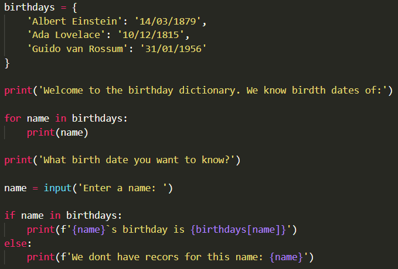
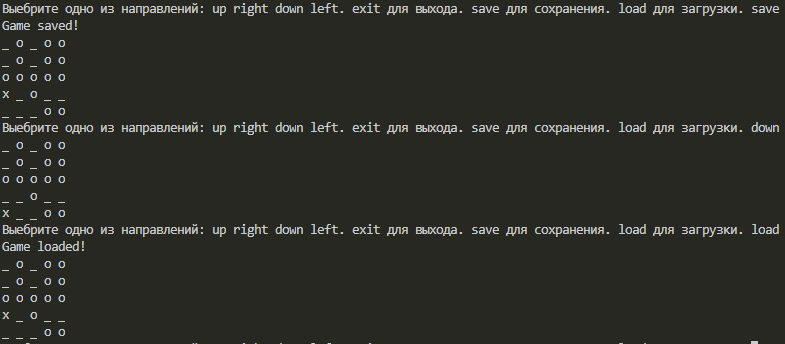
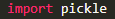
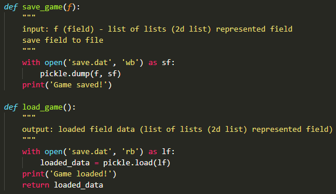
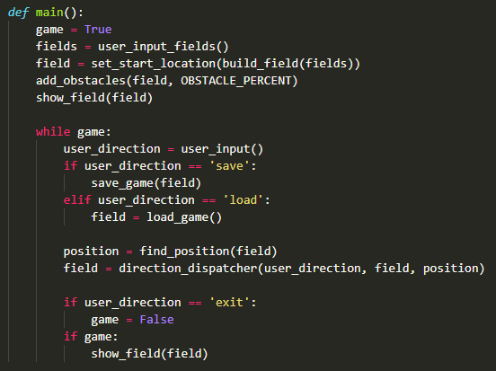
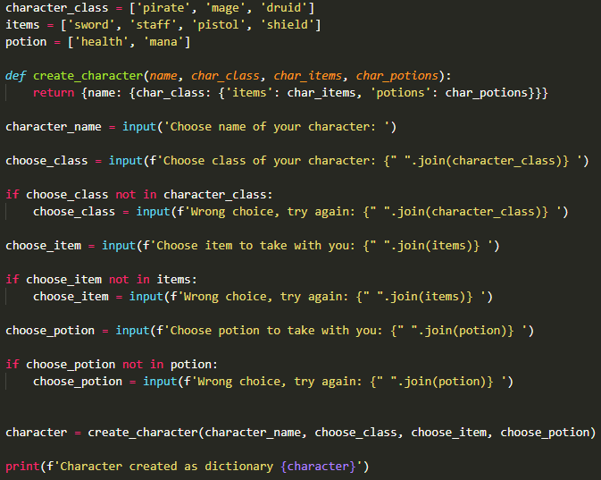

1
Дни рождения
легкоавтопроверка
Создай программу, которая хранит данные о днях рождения в виде словаря и по имени выдаёт дату.
Показать ответ (сначала попробуй сам!)

Словарь — это «телефонная книга» Python: по ключу быстро находим значение.
Создай программу, которая хранит данные о днях рождения в виде словаря и по имени выдаёт дату.

Добавь загрузку и сохранение в игру с двумерным полем (команды save и load). Подойдёт модуль pickle.




Создай программу, которая спрашивает имя, класс, предмет и зелье и создаёт словарь с данными персонажа.

Напиши функцию count_words(text), которая возвращает словарь: слово → сколько раз оно встретилось. Регистр не важен: Кот и кот — одно слово.
def count_words(text):
counts = {}
for word in text.lower().split():
counts[word] = counts.get(word, 0) + 1
return countsНапиши функцию invert(d), которая меняет местами ключи и значения словаря.
Пример
invert({'a': 1, 'b': 2}) → {1: 'a', 2: 'b'}
def invert(d):
result = {}
for key, value in d.items():
result[value] = key
return resultЕсть словарь цен prices. Напиши функцию total(cart, prices), которая считает стоимость корзины cart (список товаров). Если товара нет в прайсе — он стоит 0.
prices = {'яблоко': 30, 'хлеб': 45, 'молоко': 80}
def total(cart, prices):
s = 0
for item in cart:
s += prices.get(item, 0)
return sСделай программу-телефонную книгу, которая понимает команды:
add — спросить имя и телефон и сохранить;find — спросить имя и вывести телефон или «Не найдено»;list — вывести все записи;exit — выйти.book = {}
while True:
command = input('Команда (add, find, list, exit): ')
if command == 'add':
name = input('Имя: ')
phone = input('Телефон: ')
book[name] = phone
print('Сохранено!')
elif command == 'find':
name = input('Имя: ')
print(book.get(name, 'Не найдено'))
elif command == 'list':
for name, phone in book.items():
print(f'{name}: {phone}')
elif command == 'exit':
print('Пока!')
break
else:
print('Неизвестная команда')